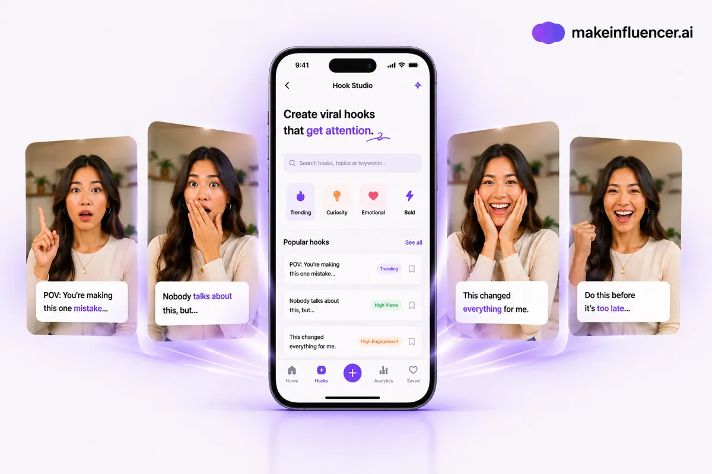
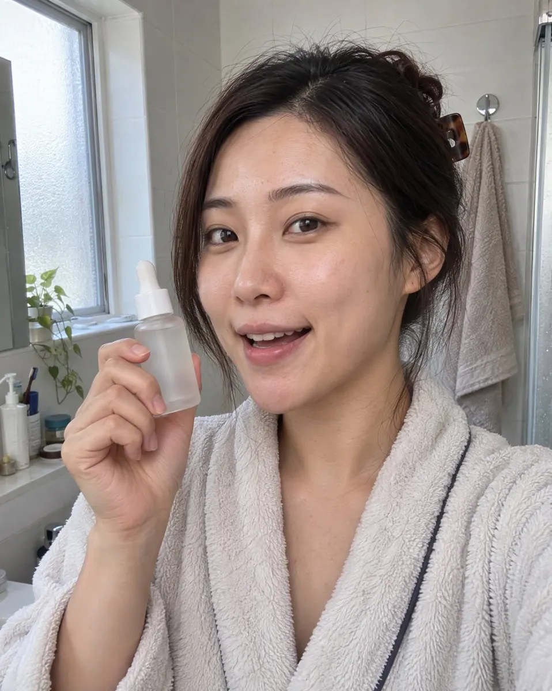

New UGC video ads every week, no filming
For COD sellers already running Meta or TikTok ads, in Morocco and across MENA: one product photo, two video ads to test.
Under one minute. Every visual in it was made with MakeInfluencer.
2 quick questions, then your plan and price in dirhams. What do you need first?
Where are you with paid ads?
Next step: pick your plan on makeinfluencer.ai.
Will AI ads look fake? See for yourself



One face in a café, in the street and in a selfie product video. Your audience sees the same presenter in every ad.
Examples generated by AI with MakeInfluencer. The people are fictional.
Create my first UGC adAll you need is one product photo.
Sound familiar?
Your TikTok ad stops working after 1 or 2 weeks, and no new creative is ready.
A UGC creator needs days for one video. Your product test can't wait.
You test several products a week, and paying a creator for each one eats the test budget.
You don't need one perfect ad. You need 4 or 5 hooks to test this week.
You want a face in your ads, but not your own.
Moroccan ad guides say a TikTok creative wears out in 7 to 14 days and advise 3 to 5 new ones a week. With one AI presenter, each new version costs credits, not a new shoot.
How it works: 3 steps
Create your presenter once
Design a fictional AI presenter and reuse the same face for every product and every client.
Add a product photo
That's all you need. You get a short presenter ad in two versions to A/B test.
Change one thing per test
Keep the presenter, swap the hook, the offer or the call to action. Keep the version that sells.
Plans from $39 a month (about 385 MAD). Cancel anytime.
Questions sellers ask
Does it work for my COD product?
Yes. One product photo is enough for your presenter to hold the product and talk about it.
Can it speak Darija, Gulf or Egyptian Arabic?
Yes. Write the lines and the dialect in the prompt, for example "Moroccan Darija" or "Saudi dialect", or upload your own voice and the presenter lip-syncs to it.
Do I own the videos?
Yes. MakeInfluencer states that what you make is yours, with no watermarks, so you can run it in your paid ads.
What if I don't run ads yet?
Then it is probably not the right time. The tool is for making new creatives fast for ads that are already being tested. Launch a product and a first campaign, and come back when you need videos every week.
Will AI ads beat my current creatives?
Your numbers will tell you. Run them against your current creatives with the same budget and audience, and keep the winners.
Make this week's test ads from one product photo
Create my first UGC adCancel anytime. Unused credits refunded within 30 days.